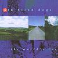

Celtic Lyrics Corner > Artists & Groups > Old Blind Dogs > The World's Room > To The Beggin' I Will Go
|  | To The Beggin' I Will Go |
| Credits : | Traditional |
| Appears On : | The World's Room |
| Language : | Scots-English |
Lyrics :
Chorus (after each verse)
:
To the beggin' I will go, go
To the beggin' I will go
O' a' the trades a man can try, the beggin' is the best
For when a beggar's weary he can jist sit down and rest
First I maun get a meal-pock made out o' leather reed
And it will haud twa firlots wi' room for beef and breid
Afore that I do gang awa, I'll lat my beard grow strang
And for my nails I winna pair, for a beggar wears them lang
I'll gang to find some greasy cook and buy frae her a hat
Wi' twa-three inches o' a rim, a' glitterin' owre wi' fat
Syne I'll gang to a turner and gar him mak a dish
And it maun haud three chappins for I cudna dee wi' less
I'll gang and seek my quarters before that it grows dark
Jist when the guidman's sitting doon and new-hame frae his wark
Syne I'll tak out my muckle dish and stap it fu' o' meal
And say, "Guidwife, gin ye gie me bree, I winna seek you kail"
And maybe the guidman will say, "Puirman, put up your meal
You're welcome to your brose the nicht, likewise your breid and kail"
If there's a wedding in the toon, I'll airt me to be there
And pour my kindest benison upon the winsome pair
And some will gie me breid and beef and some will gie me cheese
And I'll slip out among the folk and gather up bawbees